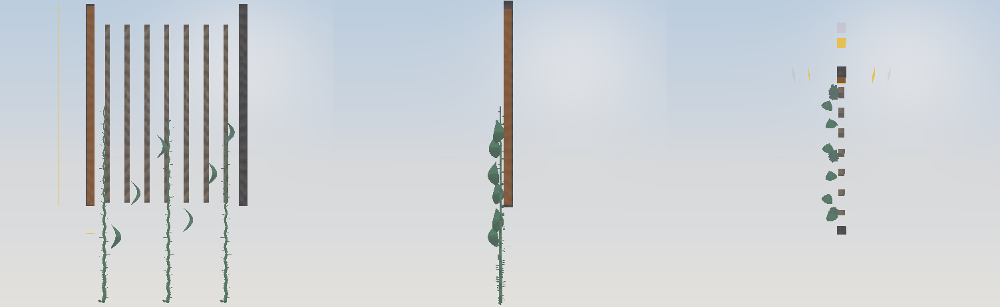

architecture/vegetation/vineA distinct bougainvillea trellis building-landscape object with explicit support, irrigation or attachment semantics and object-local botanical geometry.
Evidence 80/100 · Visual match unmeasured
 architecture/vegetation/vine
architecture/vegetation/vineA distinct grape arbor vine building-landscape object with explicit support, irrigation or attachment semantics and object-local botanical geometry.
Evidence 80/100 · Visual match unmeasured
 architecture/vegetation/vine
architecture/vegetation/vineA distinct green facade cable vine building-landscape object with explicit support, irrigation or attachment semantics and object-local botanical geometry.
Evidence 80/100 · Visual match unmeasured
architecture/vegetation/vineA distinct jasmine wall climber building-landscape object with explicit support, irrigation or attachment semantics and object-local botanical geometry.
Evidence 80/100 · Visual match unmeasured
 architecture/vegetation/vine
architecture/vegetation/vineA compact pergola bay with twining tendril vines, branching overhead growth, leaf blades, and flowering petals around a clear structural frame.
Evidence 100/100 · 99.91% recorded minimum
 architecture/vegetation/vine
architecture/vegetation/vineA freestanding slatted privacy screen with deterministic wall-seeking ivy, offset attachment behavior, a planted trough, and visible support feet.
Evidence 100/100 · 99.92% recorded minimum
 architecture/vegetation/vine
architecture/vegetation/vineA distinct wisteria pergola building-landscape object with explicit support, irrigation or attachment semantics and object-local botanical geometry.
Evidence 80/100 · Visual match unmeasured